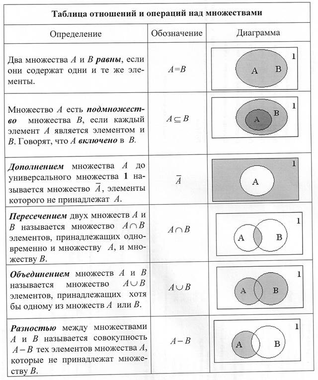
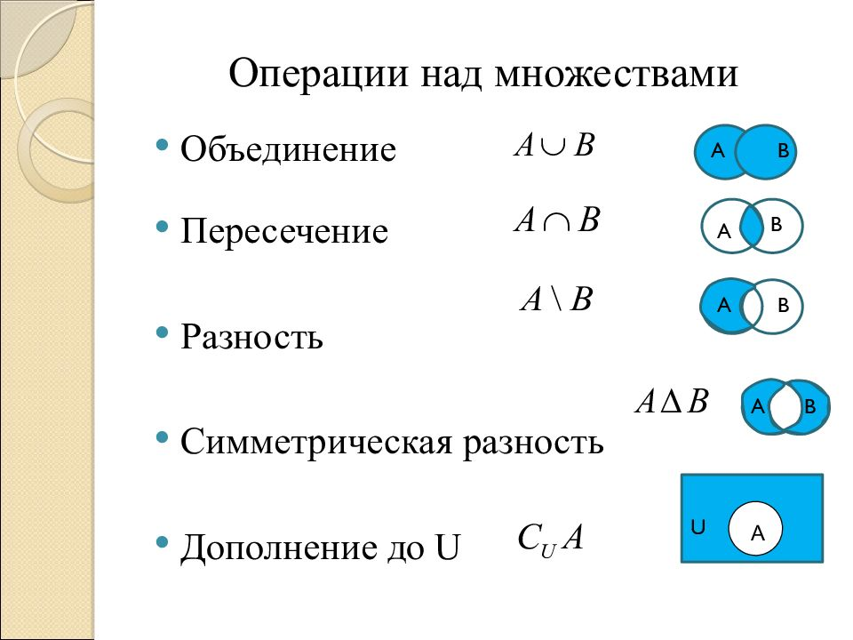

Типы компонент образуются из других типов (простых, структурированных, указателей и т. д.) данных.
Множество – одно из ключевых понятий, используемых в математике. Обозначает набор, совокупность тех или иных объектов – элементов множества.
Множество – своеобразная неупорядоченная совокупность уникальных значений. Элементы в таком «объединении» расположены хаотично.
В качестве них выступают:
- строки;
- отдельные символы;
- числовые записи.
Множество – чем-то напоминает массив и список.
В языке Паскаль существуют следующие структурированные типы:
- - тип-массив;
- - тип-запись;
- - тип-множество;
- - тип-файл.
В Pascal имеется еще два структурированных типа:
- - тип-строка string
- - тип-строка PChar, являющиеся разновидностями массива.
В отличие от этих элементов разработки множество не имеет никакой упорядоченности. Но далее это понятие будет также обозначаться как «массив». Не совсем грамотное решение, только оно чаще всего помогает новичкам быстрее освоить упомянутый объект.
В C# множество – это структура данных, которая представляет собой неорганизованный набор уникальных элементов одного и того же типа. Она имеет тесную связь с математическим понятием теории множеств.
В самом простом понимании множество – это набор уникальных однотипных данных. Они будут рассматриваться программистов в виде единого целого.
В дальнейшем объекты структурированных типов для краткости будут называться теми же именами, что и их типы, без указания слова "тип": массив, запись, множество, файл, строка.
Множество
В математике множества — это коллекции объектов, у которых есть что-то общее. Например, мы можем объявить множество четных положительных целых чисел:
[2, 4, 6, 8, 10, ...]
Или множество нечетных положительных целых:
[1, 3, 5, 7, 9, ...]
В этих двух множествах нет общих элементов. Давайте теперь посмотрим на множество делителей числа 100:
[1, 2, 4, 5, 10, 20, 25, 50, 100]
Теперь мы можем узнать, какие делители числа 100 — нечетные, просто глядя на множество нечетных чисел и на множество делителей и выбирая те из чисел, которые присутствуют в обоих. Мы также можем ответить на вопрос: «Какие нечетные числа не являются делителями ста?» или «Какие положительные целые, четные или нечетные, не являются делителями ста?».
Операции над множествами


Объединением двух множеств A и B называется множество, состоящее из элементов, входящих хотя бы в одно из множеств A или B. Знак операции объединения в Паскале «+».

Примеры:
1) [1, 2, 3, 4] + [3, 4, 5, 6] => [1, 2, 3, 4, 5, 6]
2) []+[‘a’..’z’]+[‘A’..’E’, ‘k’] => [‘A’..’E’, ‘a’..’z’]
3) [5<4, true and false] + [true] => [false, true]
Пересечением двух множеств A и B называется множество, состоящее из элементов, одновременно входящих во множество A и во множество B.
Знак операции пересечения в Паскале «*»

Примеры:
1) [1, 2, 3, 4] * [3, 4, 5, 6] => [3, 4] 2) [‘a’..’z’]*[‘A’..’E’, ‘k’] => [‘k’] 3) [5<4, true and false] * [true] => []
Разностью двух множеств A и B называется множество, состоящее из элементов множества A, не входящих во множество B.

Примеры:
1a) [1, 2, 3, 4] - [3, 4, 5, 6] => [1, 2] 1b) [3, 4, 5, 6] - [1, 2, 3, 4] => [5, 6] 2a) [‘a’..’z’]-[‘A’..’E’, ‘k’] => [‘a’..’j’, ‘i’..’z’] 2b) [‘A’..’E’, ‘k’] - [‘a’..’z’] => [‘A’..’E’] 3a) [5<4, true and false] - [true] => [false] 3b) [true] - [5<4, true and false] => [true]
Операция вхождения. Это операция, устанавливающая связь между множеством и скалярной величиной, тип которой совпадает с базовым типом множества. Если x — такая скалярная величина, а M — множество, то операция вхождения записывается так: x in M.
Результат — логическая величина true, если значение x входит в множество M, и false — в противном случае.
Например, 4 in [3, 4, 7, 9] –– true, 5 in [3, 4, 7, 9] –– false.
Используя данную операцию, можно не только работать с элементами множества, но и, даже если в решении задачи явно не используются множества, некоторые логические выражения можно записать более лаконично.
1) Натуральное число n является двухзначным. Вместо выражения (n >= 10) and (n <=99) можно записать n in [10..99].
2) Символ c является русской буквой. Вместо выражения (c >= ‘А’) and (c <= ‘Я’) or (c>=‘а’) and (c<=‘п’) or (c>=‘р’) and (c<=‘я’) пишем c in [‘А’.. ‘Я’, ‘а’.. ‘п’, ‘р’.. ‘я’] и т.д.
Добавить новый элемент в множество можно с использованием операции объединения. Например, a:= a+[5] Для этих же целей в Turbo Pascal 7.0 предназначена процедура Include: include (M, A) M – множество, A – переменная того же типа, что и элементы множества M. Тот же пример можно записать так: Include (a, 5)
Исключить элемент из множества можно с помощью операции «разность множеств». Например, a:= a-[5] Для этих же целей в Turbo Pascal 7.0 предназначена процедура Exclude: exclude (M, A) M – множество, A – переменная того же типа, что и элементы множества M. Тот же пример можно записать так: Exclude (a, 5)